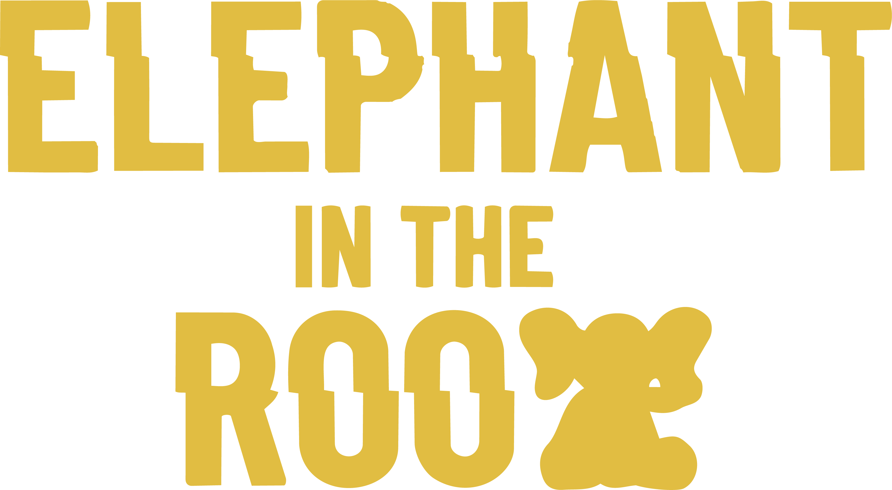

Gerald
IT Manager
Let's talk about the

Five People. Five Careers. One Very Large Elephant.
See how they stopped fearing AI and started using it.
Gerald
IT Manager
Shae
Business Leader
Keith
Student/Athlete
Izzy
IT Professional
Glenn
Sales Professional
Recommended AI Skills Navigator Playlist:
Sell Smarter with AI